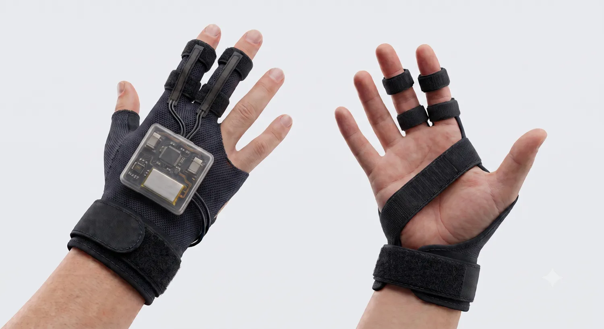
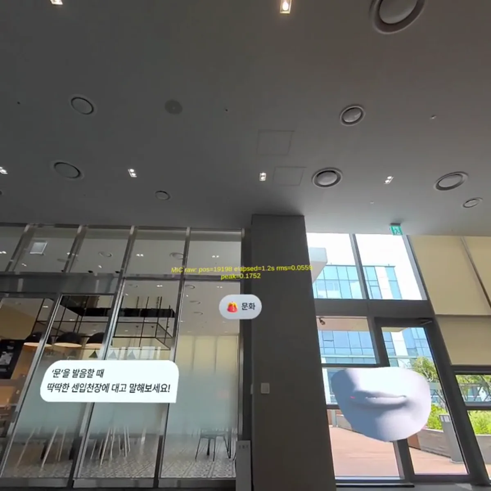
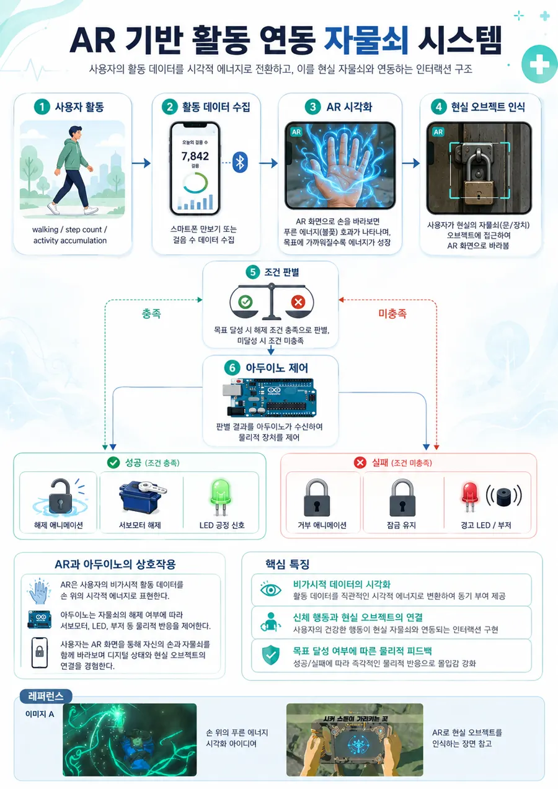
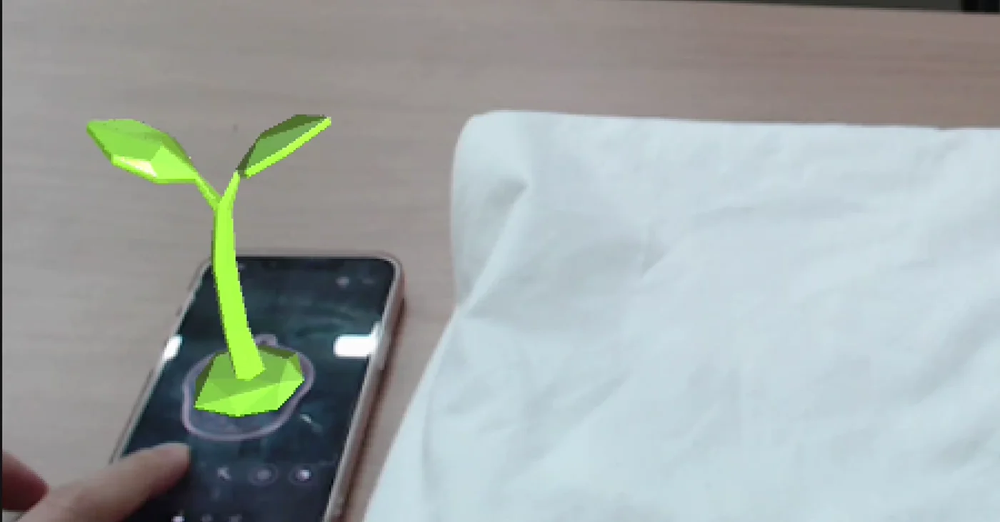
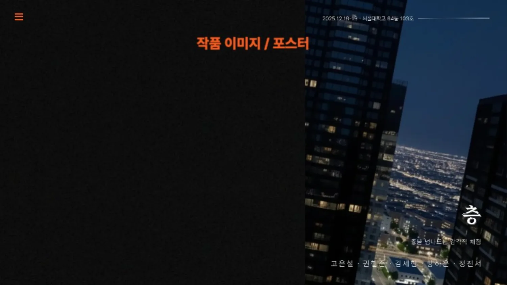
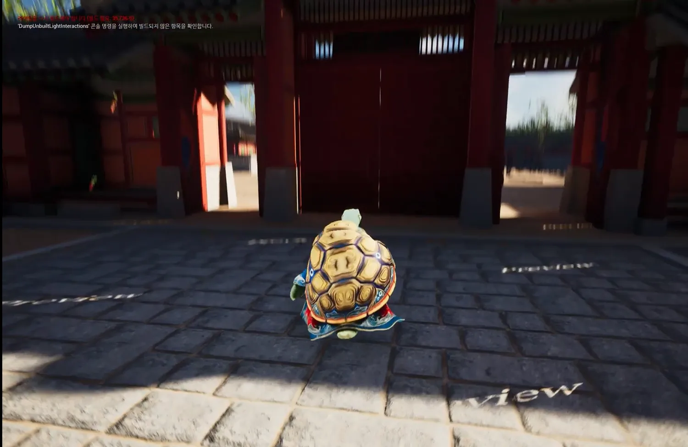

CES · Syncly × BLendee
미국 실리콘밸리·스탠퍼드·버클리·CES의 기술·창업 현장 탐방과 팀 창업 아이디어 피칭을 담은 6개월 프로그램
PORTFOLIO
HCI 관점에서 음성·제스처·생체신호 같은 현실의 입력을 AI와 신호처리로 해석하고,
XR의 시각·공간·촉각 피드백으로 연결하는 인터페이스를 구현합니다.
센서·AI·XR을 연결해 사람이 디지털 환경과 자연스럽게 상호작용하는 미래를 그려나갑니다.
미국 실리콘밸리·스탠퍼드·버클리·CES의 기술·창업 현장 탐방과 팀 창업 아이디어 피칭을 담은 6개월 프로그램
일본 XR 현장 조사와 테마파크 기반 IP 확장 제안
층간소음의 양쪽 입장을 차례로 체험하는 공감형 VR 콘텐츠
<수궁가>의 소리와 감각 정보를 Unreal 기반 시각·인터랙티브 전시로 확장
게임의 패턴·스킬 아트워크 제작
평가 프레임워크 및 대화 로그 기반 협업 툴의 기획·구현
AR Sprout 시야가 마커에 머무는 시간을 새싹 성장·보상·휴식 유도와 연결
AR 자물쇠 걸음 수를 AR로 시각화하고 Arduino 잠금장치와 연동
액체금속 마이크로구조 섬유 센서의 전기적 연결과 웨어러블 입력을 위한 실험 진행
프로젝트 ‘실타래’ — strain sensor와 IMU 기반 장갑 마우스 · 최우수상
청각 피드백이 제한된 사용자를 위한 XR 발음 학습 서비스
PromptHMR 기반 3D 인체 추정 결과를 EgoHTR 정답 데이터와 비교·평가하는 연구 진행 중

Fiber Strain Sensor·BMI270 IMU·Arduino Nano 33 BLE 기반 웨어러블 장갑 마우스 ‘실타래’ · 최우수상

STT·음성 지표 분석 결과를 XR 시각 피드백과 가상 발표 연습으로 연결한 학습 인터페이스 · 10기 최우수상
미래 HCI/HMI의 인터페이스 방향으로 BMI를 접하고, 센서 제작·실험과 Arduino 연동을 수행하며 재료·공정이 센서 성능과 시스템 구현에 미치는 영향을 배웠습니다.
EgoHTR·PromptHMR의 SMPL-X 설정과 관절 인덱스 불일치를 찾아 정렬하고, 3D 관절을 MPJPE로 평가

Vuforia 마커 인식·가림 입력과 걸음 수 조건을 Arduino LED·서보모터 잠금 제어로 연결

Vuforia Engine ImageTarget의 인식 유지·유실·재인식을 C# 상태 제어와 새싹 성장 인터랙션으로 연결

공간 탐색·시점 전환·소리 연출로 층간소음의 양쪽 입장을 체험하는 VR 콘텐츠

Unreal Engine에서 <수궁가>의 소리·사설·3D 에셋을 공간 탐색형 VR 경험으로 구성